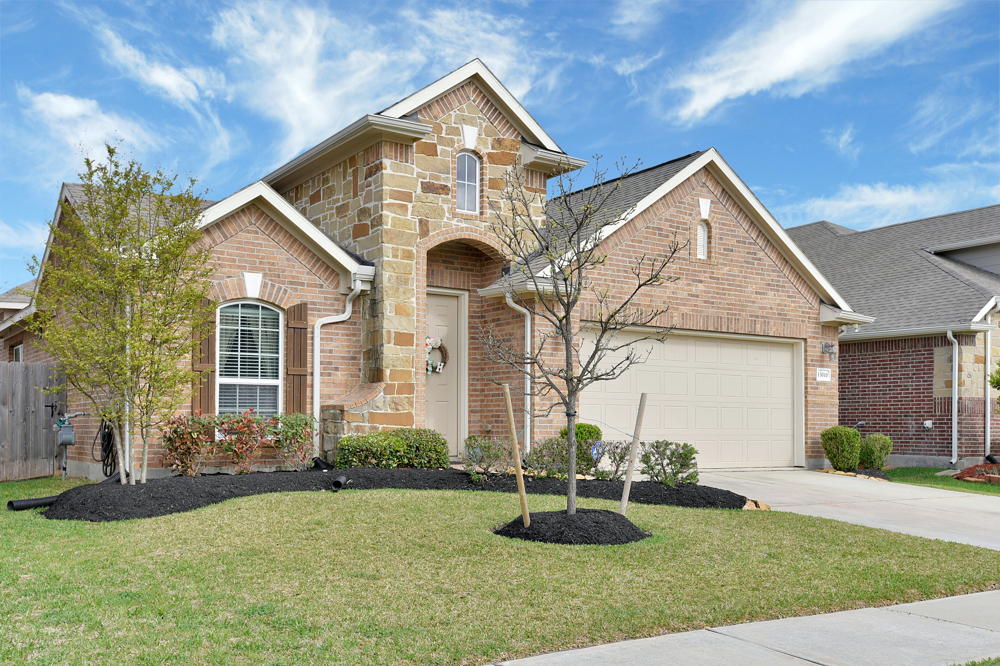
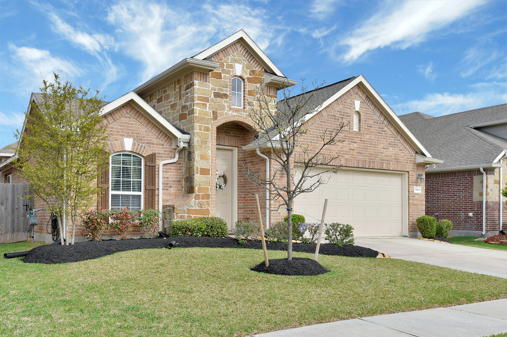

Always going the extra mile!
About Sheri
Sheri Tilton is the realtor you need now more than ever in this changing market. With unwavering dedication, honesty, and a wealth of knowledge, Sheri goes the extra mile to fulfill her clients' real estate needs. Her six years of experience as a builder and her background in excavation provide her with a unique perspective, enabling her to identify crucial details like roofing distinctions, radon systems, and potential renovation challenges. Whether you're looking for an existing home, planning to build, or interested in equestrian properties, Sheri's expertise shines through. Her passion for horses also benefits equestrian clients, and her 90% referral-based business speaks volumes about her commitment to satisfying clients' expectations. Contact Sheri Tilton today to experience her exceptional service and expertise.
Featured Listings

 
